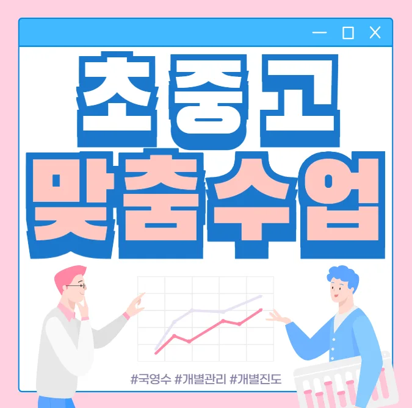

학부모님은 아이가 다니는 별가람역 교습소을 선택할 때 주변 환경을 먼저 살펴보는 것이 중요하다고 생각해요. 주변에는 아파트와 단독 주택이 혼합된 주거지역이 많아 통학이 편리해요. 별가람역 교습소은 학교와 가까운 위치에 있으면 이동시간을 줄일 수 있어요. 수업 시간표가 학교 일정과 겹치지 않도록 확인하는 것이 필요해요. 강사의 교육 철학과 커리큘럼이 아이의 학습 목표와 맞는지 검토해요. 체험 수업을 직접 참여해보면 강사의 설명 방식과 학습 분위기를 직접 느낄 수 있어요. 별가람역 주변에는 별가람역 교습소가가 활성화돼 있어 선택 폭이 넓어져요. 마지막으로 별가람역 교습소의 후기와 졸업생 성과를 비교해 보는 것이 도움이 돼요. 학생의 학습 스타일을 고려해 시각청각 자료를 적절히 활용하는 별가람역 교습소을 선택하면 효과가 커요. 마지막으로 비용 대비 서비스 품질을 비교해 현명한 결정을 내릴 수 있어요.
이 지역은 아파트와 주택이 혼합된 주거 형태라 다양한 연령층이 모여 살고 있어요. 초등 저학년 학생들은 학교에서 배운 기초 개념을 생활 속 예시와 연결해 주는 활동을 선호하며, 짧은 집중 시간에 놀이형 과제가 효과적이에요. 초등 고학년은 교과서 중심 심화 학습에 도전하지만, 스스로 계획을 세우는 것이 어려워 보조적인 학습 지도와 목표 설정이 필요해요. 중학생은 교과목 간 연계성을 이해하고, 시험 대비 전략을 체계화하려는 경향이 강해요. 이때 교사의 피드백이 구체적일수록 학습 효율이 높아져요. 고등학생은 진도 관리와 실전 모의고사 활용이 핵심이며, 대학 입시 목표에 맞춘 맞춤형 과목 선택이 중요해요. 전체 학년은 지역 내 학교 행사와 별가람역 교습소 프로그램이 연계돼 있어, 학습 동기 부여와 사회성 발달에 도움이 돼요.
와와학습코칭센터는 개념 반복과 피드백을 적절히 배분해 학습 효율을 높이는 방식을 채택하고 있어요. 주요 대상은 초중학생으로, 특히 수학 기본기를 강화하고 싶은 학부모에게 적합해요. 커리큘럼은 매주 핵심 개념을 두 번씩 노출하고, 학습 진도에 따라 맞춤형 문제를 제공해요. 수강료는 초등수학 190,000원, 중등수학 230,000원이며, 지역 평균보다 경쟁력 있는 가격을 유지하고 있어요. 별가람역 인근에 위치해 버스 정류장에서 도보 5분 거리라 접근성이 뛰어나 학부모들이 편리하게 방문할 수 있어요. 학습 목표는 매주 진행 상황을 점검하고, 필요 시 학습 계획을 재조정해요. 또한 학부모와의 정기 상담을 통해 가정 내 학습 지원 방안을 함께 모색해요
| 학원명 | 지역 학원 |
| 수강료 | 초등수학 190,000원 | 중등수학 230,000원 |
CURRICULUM
이 별가람역 교습소의 커리큘럼은 무리한 선행보다는 확실한 이해를 최우선으로 생각하고 있어요. 매수업 시간 시작 전에 이전 진도 복습 후 오늘 진도 진입하는 방식을 취해서 배운 내용이 머릿속에서 정리될 시간을 충분히 준답니다. 특히 틀린 문제는 그냥 넘어가지 않고 오답 내용은 책과 노트를 참조해서 다시 설명 써보기 사용을 통해 완벽하게 내 것으로 만드는 과정을 거쳐요. 이렇게 직접 설명을 써보면 개념이 얼마나 정확하게 잡혔는지 바로 알 수 있거든요. 아이들이 무엇을 모르는지 정확히 파악하고 다시 설명해 보는 과정을 통해 실력이 탄탄해지는 것을 느낄 수 있어요.
학생들은 별가람역 교습소 선택 단계에서 목표와 프로그램의 불일치를 간과하고, 등록 후에는 과다 학습으로 피로도가 상승하며, 학습 관리 단계에서는 시간 관리 미숙으로 복습이 부족해요. 이런 실수를 예방하려면 초기 상담에서 구체적인 목표 설정과 학습량 조절이 필요해요. 별가람역은 다양한 별가람역 교습소이 모여 있어 선택이 쉽지만, 신중한 판단이 요구돼요
첫 번째로는 개별 진단을 통해 학생마다 맞는 반 배치를 진행하고, 두 번째로는 수업 구성에 목표 지향적 활동을 삽입해요. 세 번째로는 장기 프로젝트형 계획을 병행하면서 학습 동기를 지속적으로 자극해요. 네 번째로는 질문과 답변을 번갈아 주는 대화식 수업으로 이해도를 높이고, 마지막으로는 정기적인 성취도 체크를 통해 학습 방향을 유연하게 조정해요.
고등학교 1학년으로 꾸준히 공부하지만 응용 문제에서 흔들리는 아들을 둔 부모님께 추천해요. 시험 직전 벼락치기 습관이 있는 학생에게도 체계적인 복습 플랜을 제공해요. 자기주도 학습에 어려움을 겪는 학생이 스스로 목표를 설정하고 달성하도록 돕는 프로그램이 있어요.
아이에게 맞춤형 수업을 제공해 주셔서 정말 고맙습니다. 매주 진행되는 실전 예제가 바로 적용될 수 있어 아이가 스스로 문제를 풀어보는 즐거움을 느꼈어요. 선생님의 따뜻한 소통 덕분에 아이가 수업에 적극적으로 참여하고, 질문도 많이 하게 되었어요. 부모와 함께 수업을 지켜보는 시간 덕분에 우리 가족 모두가 교육에 대한 믿음을 갖게 되었어요. 아이가 스스로 출결을 기록하면서 책임감이 생기고, 학습에 대한 주도성이 크게 향상됐어요. 자유로운 분위기에서 질문하기 쉬워 부담 없이 학습에 집중할 수 있었어요. 이런 긍정적인 경험이 앞으로도 지속적인 성장으로 이어지길 기대해요.

| 학원명 | 와와학습코칭학원 |
| 등록번호 | 제3918호 |